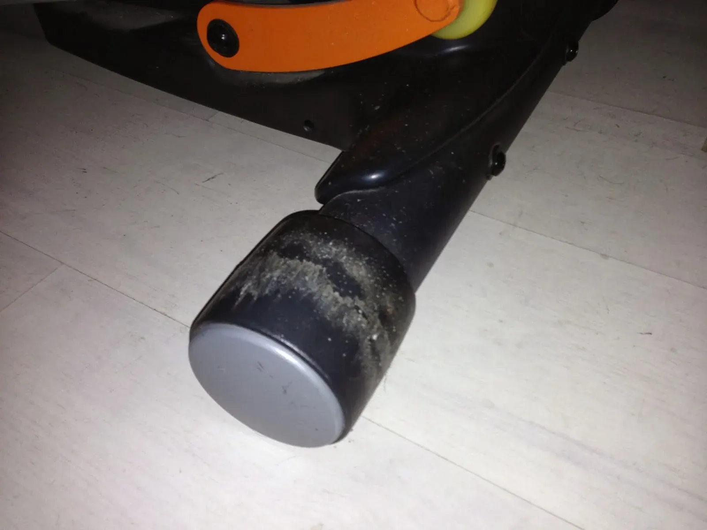
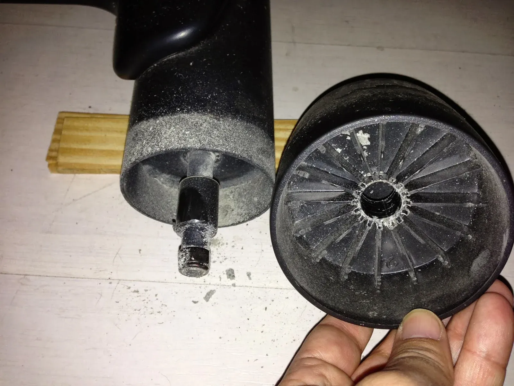
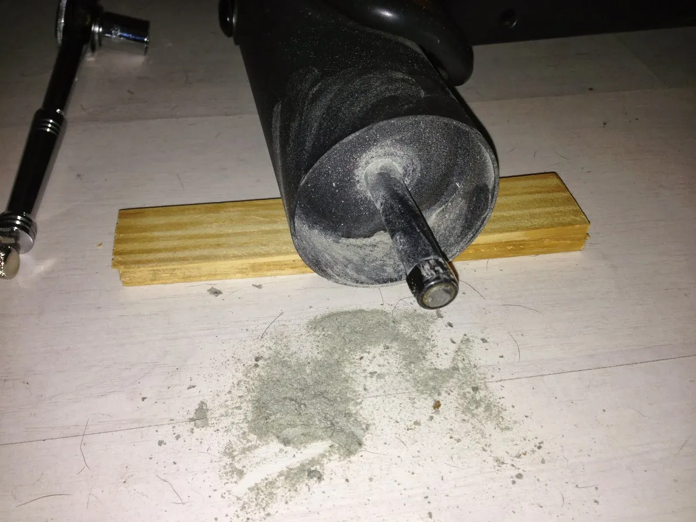
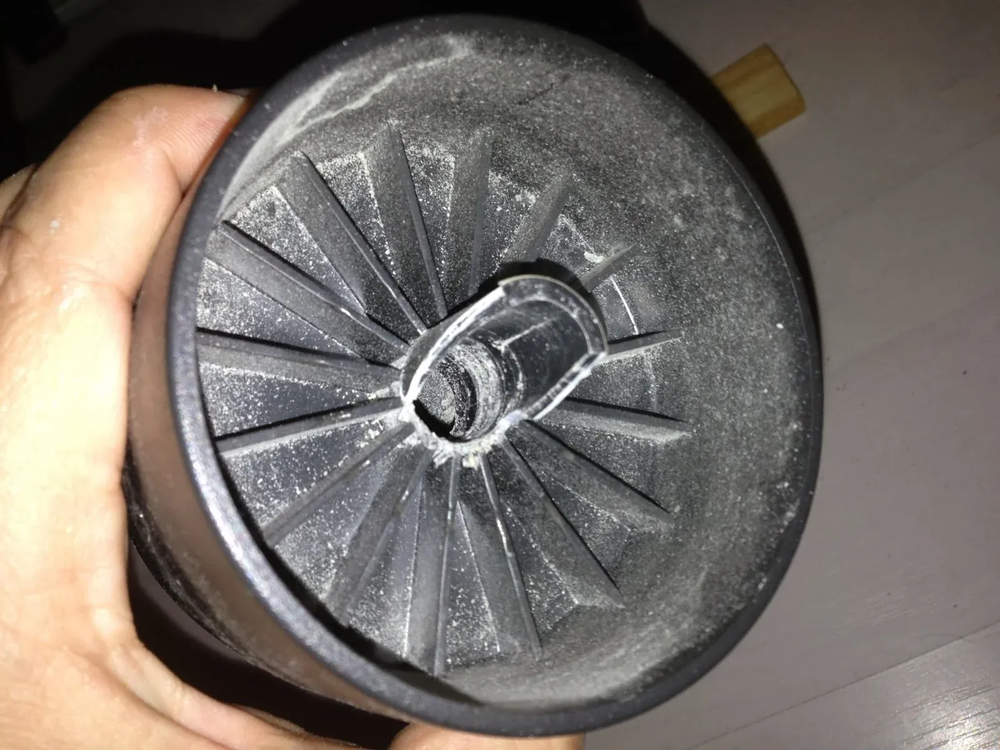
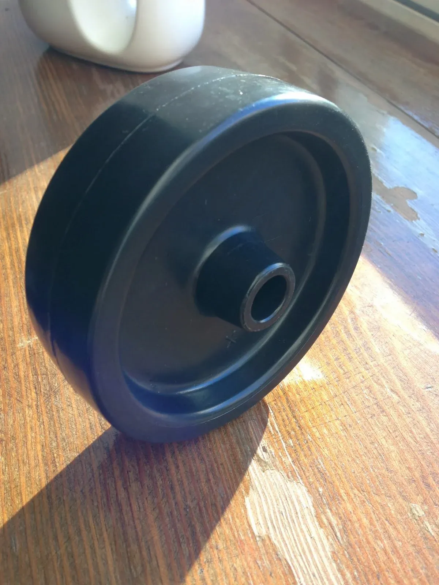
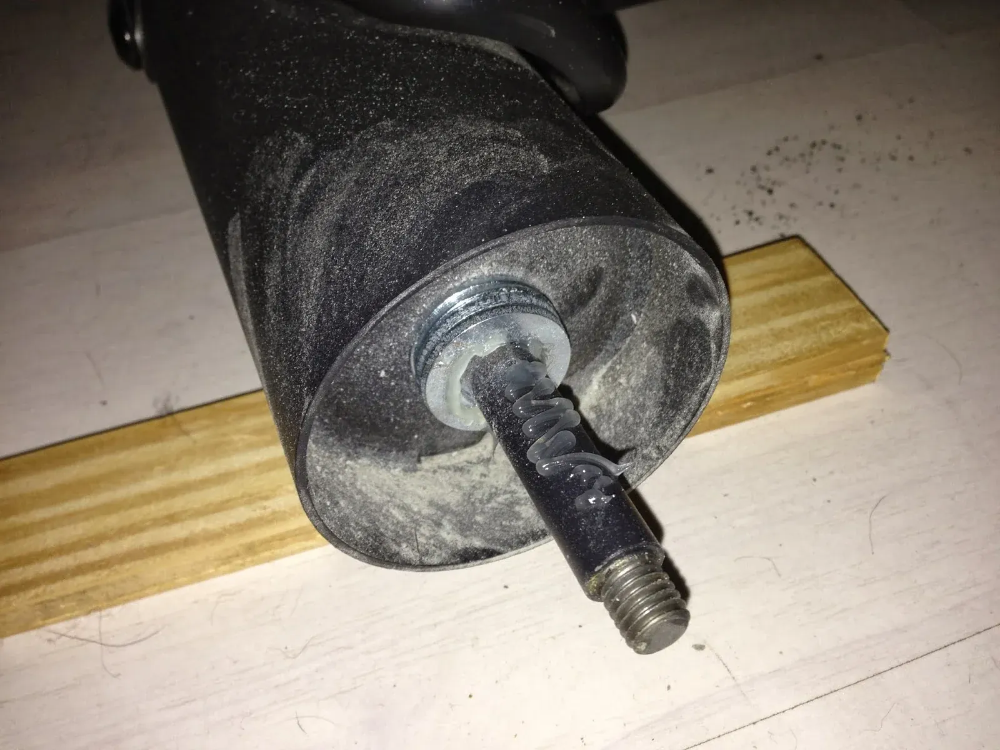
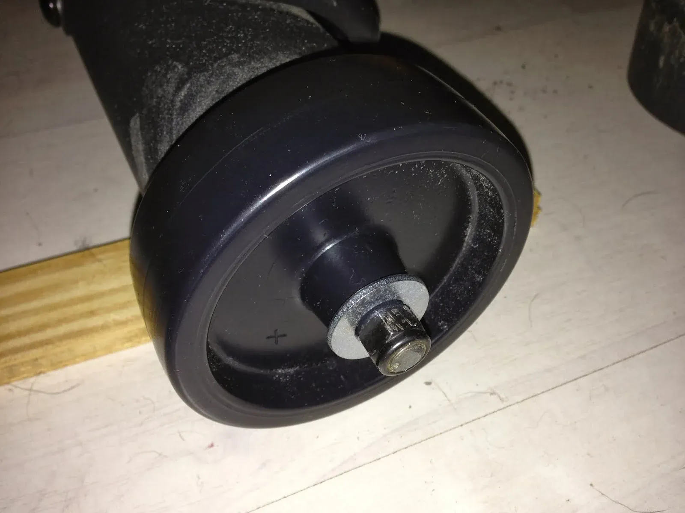

Repair: Nordictrack Audiostrider 990 Elliptical Wheels
Background
In 2009 I bought a Nordictrack elliptical exercise machine, model Audiostrider 990 (PDF link). As home exercise machines go, it's fine. It's uses variable magnetic resistance and it folds up fairly compactly. It also has two front wheels that it can be tilted on them and moved around.
The wheel design of the model I bought is flawed, however. Each wheel is made of somewhat soft plastic and rides on a steel axle, without bearings, and which has an hexagonal nut at the end. Over time, the nut and axle literally pulverize the wheels, as you'll see in the pictures below.
Rather than spend $25 on replacement wheels from Nordictrack, I bought replacements from McMaster.com.
Incidentally, I noticed that Nordictrack has updated the design of the AudioStrider 990 and now use a much smarter wheel and rolling system, perhaps because of complaints from users of the model I own.
Repair
The repair was simple, with the hardest part finding a wheel that would be just the right size and not too expensive.
After a bit of searching, I found the perfect set of wheels on McMaster-Carr (a simply awesome website).
Wheels:
Description: Econo-Lite Polypropylene Wheel, Black, 4" X 1-1/4", 1/2" Axle, 275# Capacity
Price: $2.35 each
In order to keep the wheels I bought from rubbing on the outer cylinder, surrounding the axle, I placed 4 washers at the "front" of the axle, and another between the new wheel and the outer nut. The extra washer kept the wheels from moving laterally along the axle.
Lubricant:
The lubricant I used is called Sil-Glyde Lube Compound and works great. It's primarily for car and boat maintenance, but I've found many other uses such as lubricating wooden door hinges.
Pictures of the repair


View full-size imageOriginal wheel, before removal.


View full-size imageLeft wheel, showing how the axle destroyed the wheel from within.


View full-size imageRight wheel removed, showing plastic dust from the axle grinding away inside the wheel.


View full-size imageRight wheel, showing damage inside.


View full-size imageReplacement wheel purchased from McMaster-Carr


View full-size imageWashers keep the new wheel from rubbing against the outer metal cylinder of the axle, and automotive grease keeps the axle lubricated to prevent binding and wear.


View full-size imageCompleted repair, with outer washer to keep the wheel from moving laterally and the hexagonal nut holding everything in place.
1 comment
Comments are closed. These were left on the previous version of this site. Questions? Get in touch.
Very well replacement!! With pictures it is easy to follow the steps for wheel repairing if same problem will occur. Thanks for posting some nice stuff over here.